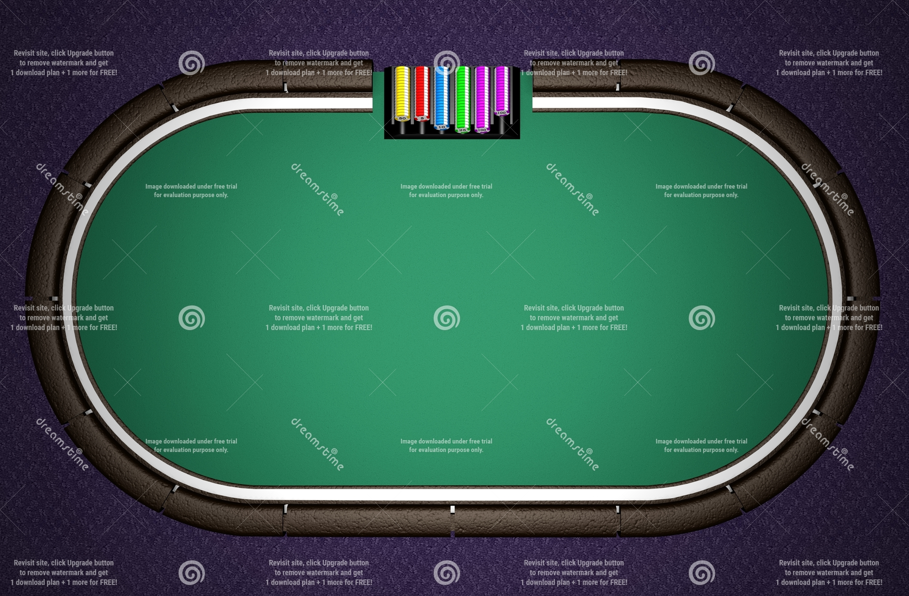

<ng-container *ngIf="seats$ | async as seats">
  <section class="poker-table">
    <div class="poker-table__container">
      
      <qp-seat *ngFor="let seat of seats"
        (reserveTriggered)="reserveSeat($event)"
        [seat]="seat">
      </qp-seat>
      <qp-community-cards [gameState]="gameState$ | async"></qp-community-cards>
    </div>
  </section>

  <qp-actions *ngIf="isMyTurn$ | async"
    [gameState]="gameState$ | async"
    [seats]="seats"
  ></qp-actions>
</ng-container>
